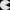
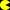

Por favor, lee el
descargo de responsabilidades
Please, read our
disclaimer
Diseño de sistemas digitales con VHDL
http://eciencia.urjc.es/dspace/handle/10115/5700
http://hdl.handle.net/10115/5700
Capítulo 7:
Transmisión en serie por RS-232
Capítulo 8: Circuitos aritméticos
Multiplicador combinacional de 4 bits
Multiplicador combinacional genérico
Multiplicador estructural de 4 bits
Multiplicador estructural genérico
Multiplicador segmentado genérico
Multiplicador secuencial genérico
Capítulo 9:
Controlador de pantalla VGA
Capítulo 12:
Memorias
Memoria ROM
Pasar imágenes a memoria ROM en VHDL
Imagen en escala de grises 100x100
Imagen en color 100x100
Capítulo 13:
Mostrar caracteres por pantalla
Memoria ROM con mapa de bits de caracteres
Capítulo 15:
Videojuego del Pac-Man
Memoria ROM con mapa de bits del Pac-Man
Memoria ROM con el laberinto
Memoria ROM que indica los tipos de pared
Capítulo 7: Transmisión en serie por RS-232
Paquete de funciones para la UART:
uart_pkg_fun.vhd
Paquete de la UART:
uart_pkg.vhd
Capítulo 8: Circuitos aritméticos
Multiplicador combinacional de 4 bits
Módulo:
math_mult_comb1.vhd
Banco de pruebas:
tb_mult_comb1.vhd
Multiplicador combinacional genérico
Módulo:
math_mult_comb_gen_libro.vhd
Banco de pruebas:
tb_mult_comb_gen_libro.vhd
Multiplicador estructural de 4 bits
Módulo:
math_mult_struct.vhd
Submódulo:
math_suma_and.vhd
Banco de pruebas:
tb_mult_struct.vhd
Multiplicador estructural genérico
Módulo:
math_mult_struct_gen.vhd
Submódulo (no cambia):
math_suma_and.vhd
Banco de pruebas:
tb_mult_struct_gen.vhd
Multiplicador segmentado genérico
Módulo:
math_mult_comb_gen_clkpipe.vhd
Banco de pruebas:
tb_mult_comb_gen_clkpipe.vhd
Multiplicador secuencial genérico
Módulo:
math_mult_seq.vhd
Paquete:
mult_pkg.vhd
Banco de pruebas:
tb_mult_seq.vhd
Capítulo 9: Controlador de pantalla VGA
Paquete VGA:
vga_pkg.vhd
Paquete general de funciones:
dcse_pkg.vhd
pinta barras para XUPV2P:
pinta_barras.vhd
pinta barras para Nexys2:
pinta_barras.vhd
Capítulo 12: Memorias
Memoria ROM
Memoria ROM, Imagen 16x16 y 1bit (blanco y negro):
rom1b_16x16.vhd
Memoria ROM, Imagen 16 filas y 16 bits dato (los 16píxeles de una fila en una dirección de memoria, blanco y negro) :
rom16b_16.vhd
Memoria ROM, Imagen 10x10, 8 bits: 256 niveles de gris :
rom8b_pacman10x10.vhd

Memoria ROM, Imagen 10x10, 8 bits: 256 colores :
rom_rgb_8b_pacman10x10.vhd

Imágenes a memoria ROM en VHDL
Programa que pasa de una imagen a una ROM en VHDL
Imagen en escala de grises 100x100
patron_100x100_gris.png
Memoria ROM, Imagen 100x100, 8 bits por palabra: 256 grises.
rom8b_patron_100x100_gris.vhd
patron_100x100_gris.pgm
PGM guarda en 8 bits, escala de grises
patron_100x100_gris.raw
En 8 bits en escala de grises 100x100.
Sin cabecera. Para enviar por la UART
Imagen en color 100x100
patron_100x100_color.png
Memoria ROM, Imagen 100x100, 8 bits por palabra: 256 colores.
RRR
GGG
BB
: Rojo: (7:5), Verde (4:2), Azul (1:0)
rom_rgb_8b_patron_100x100_color.vhd
patron_100x100_color.ppm
PPM guarda en 24 bits, 8 bits para cada color
patron_100x100_color.raw
En 24 bits, 8 bits para cada color. RGB 100x100.
Sin cabecera. Para enviar por la UART
Capítulo 13: Mostrar caracteres por pantalla
Memoria ROM con mapa de bits de los 127 caracteres ASCII. Están los caracteres alfanuméricos y algunos signos de puntuación. Pero no están todos. Las letras minúsculas están en mayúsculas por lo que hay dos "A", dos "B",...
romchar.vhd
Capítulo 15: Videojuego del Pac-Man
Memoria ROM del muñeco del Pac-Man, Imagen 16 filas y 16 bits dato (los 16píxeles de una fila en una dirección de memoria, blanco y negro) :
rom_pacman16b16.vhd
Memoria ROM del laberinto del Pac-Man, Imagen 30 filas y 16 bits dato (los 16píxeles de una fila en una dirección de memoria, blanco y negro). El laberinto está a la mitad, hay que formar la imagen simétrica de la parte derecha para que sea de 30 filas y 32 columnas :
rom_laberin30b16.vhd
Memoria ROM que indica los tipos de celdas de la pared del laberinto, basados del laberinto del Pac-Man, Imagen 30 filas y 16 bits dato (los 16píxeles de una fila en una dirección de memoria, blanco y negro). El laberinto está a la mitad, hay que formar la imagen simétrica de la parte derecha para que sea de 30 filas y 32 columnas
rom_laberin30b16.vhd
Los siete tipos de datos (en binario) representan los cuatro tipos de esquinas, lineas verticales y horizontales, y puntos interiores (o de pasillo del laberinto):
[
Departamento de Tecnología Electrónica
] | [
Universidad Rey Juan Carlos
]